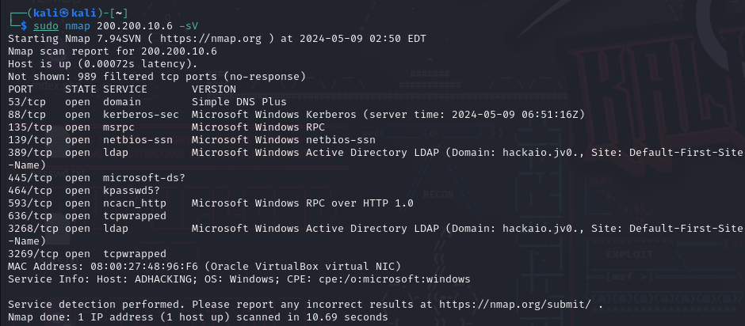
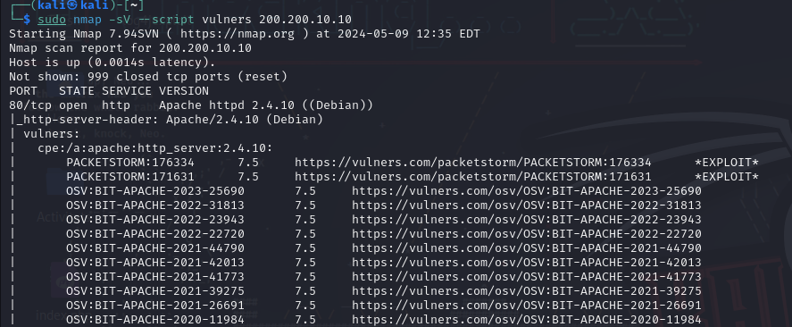
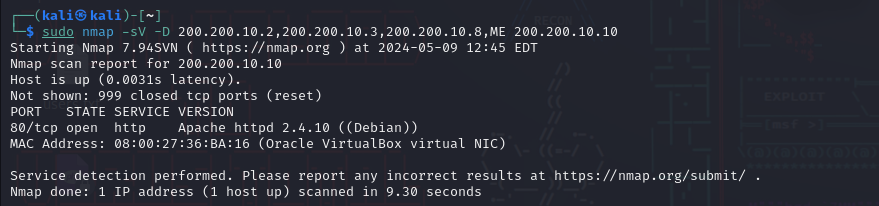

Nmap
Nmap
Nmap o Network Mapper es una de las herramientas más utilizadas en el mundo del hacking, ya que permite realizar exploraciones de redes y auditorías de seguridad. Nmap es una herramienta de código abierto creada por el equipo del mismo nombre. Está escrita en su mayoría por lenguaje C, C++ y Lua (https://nmap.org/). Su funcionalidad más interesante es la del escaneo masivo de dispositivos en una red, junto a los servicios, sistemas operativos y cortafuegos que utilizan. Nmap también cuenta con decenas de opciones para personalizar el escaneo de dispositivos ( -A para detectar versiones, sistemas operativos, puertos, etc. -sL para detectar objetivos…).
Para poder escanear máquinas virtuales (CTF) en la red, utilizaremos nmap [IP de red / CIDR]

Ejemplo básico de nmap. Aqui se muestran las IPs de las máquinas virtuales, junto a los puertos abiertos. La red es 200.200.10.0 y el bloque CIDR /24
Normalmente saldrán varias IPs, y un listado de puertos abiertos por cada una de estas. Los puertos más comunes, y que pueden indicar la presencia de una máquina virtual CTF, son el puerto 22 de TCP (SSH) para conectarse remotamente; y 80 de TCP (HTTP) por alguna página web que se está hospedando en la máquina destino.

Potencial candidato de ser un CTF, ya que tiene los dos puertos mencionados anteriormente.
Para poder saber más información sobre los sistemas, podemos poner la IP del sistema junto a diversas banderas o “flags” en la terminal. Una muy interesante es la -sV , para saber la versión de los servicios.
Esta máquina Windows Server, por ejemplo, tiene un Active Directory abierto, y podemos saber el nombre del dominio, la dirección MAC y cuánto tiempo lleva activa por el servicio de Kerberos
Con -O , podemos saber el sistema operativo de la máquina con la IP especificada:

En este caso, nos encontramos ante una máquina virtual que utiliza Linux 4 o Linux 5, gracias a su kernel.
Otra opción muy interesante es la de –script , la cual nos permite ejecutar un script de LUA para poder detectar cosas más específicas. Casi todos los scripts están hechos y mantenidos por la comunidad y hay de muchos tipos. Algunos de los que nos pueden ser más útiles a la hora de resolver máquinas son los scripts que detectan vulnerabilidades. Ejemplos de estos son vulscan, vulners, etc.
Podemos observar distintos tipos de vulnerabilidades y exploits de Apache2 encontrados en esta máquina.
Si detectamos algún cortafuegos en la máquina objetivo, podemos emplear técnicas de evasión como fragmentar los paquetes de IP a la hora de detectar máquinas, crear IPs falsas mediante spoofing para complicar la detección de nuestra IP con -S o incluso crear señuelos con -D para que el IDS o cortafuegos crea que se están realizando escaneos desde distintos lugares.
En el ejemplo, se puede ver como se utilizan 3 IPs como señuelo, seguida de “ME”, que es nuestra IP real. Si no ponemos nuestra IP, no se podrá realizar el escaneo.
Para finalizar, y como curiosidad, Nmap es una herramienta tan popular que incluso ha aparecido en la gran pantalla, en películas como Matrix Reloaded, Dredd, Snowden, Elysium, Los Cuatro Fantásticos, etc.